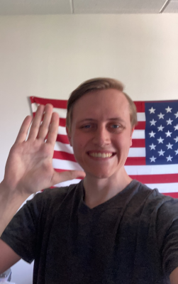

AAAHHHHH! Someone help me please! I've trapped myself inside this website and I don't know how to get out!!!!! That was just a joke, I havent uploaded my consciousness (yet). As you can tell I am a bit of a jokster, but thats not my only defing feature. I am currently 22 years old and attend Michigan State University (GO GREEN!). Growing up I was always interested in technology. I liked to see how things were made, how they were opperated, and how I could use them. So at school I am studying Information Science with an minor in IT. In short, I am a big computer nerd. but I am also just a regular nerd too. I like watching Star Wars, playing Magic the Gathering, and reading sci-fi novels.
Here are some other cool facts about me: